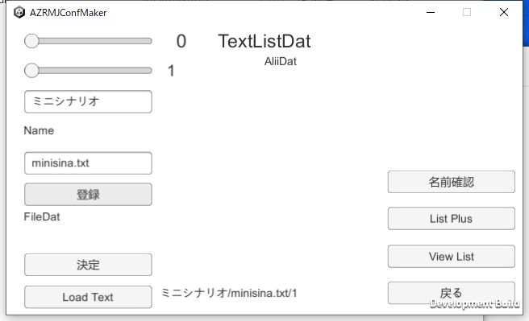
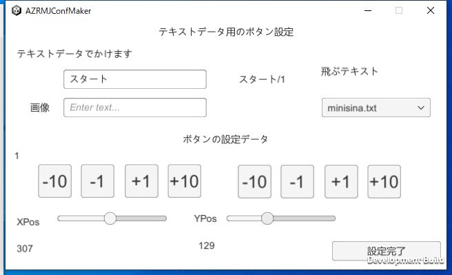
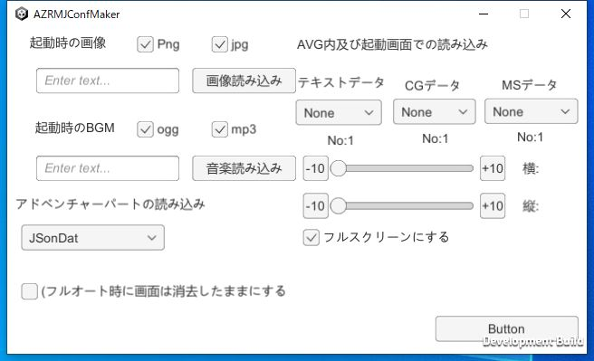
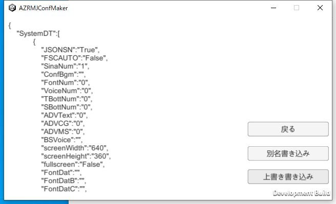

|
前回、JSonファイルを作成するところまでやりました ですが、作っただけでは動かせないので動かすための設定を行います。 まずは作ったファイルを登録します。 JSTextSetというボタンがあるのでそちらを選びます 登録ボタンを押して、Jminisina.txtをセットします。 |  |
|
次に、起動画面設定を選んでください。 変更するを選んで、上のテキスト欄に登録したい名前を入れて、下のXposとYPosでボタンの位置を決めて、飛ぶテキストに先ほど作成したテキストを入れます。 |  |
|
起動時のOP画面とBGMを設定します。 JSONファイルでの起動に変更して起動画面の設定は終了です |  |
|
その二つを行ったので、起動画面にシナリオを登録することが出来ました。 後はJsonFileの保存をして、実際に、本体側にファイルを移動して、立ち上げてみてください。 動くのを確認出来たら終了です |  |